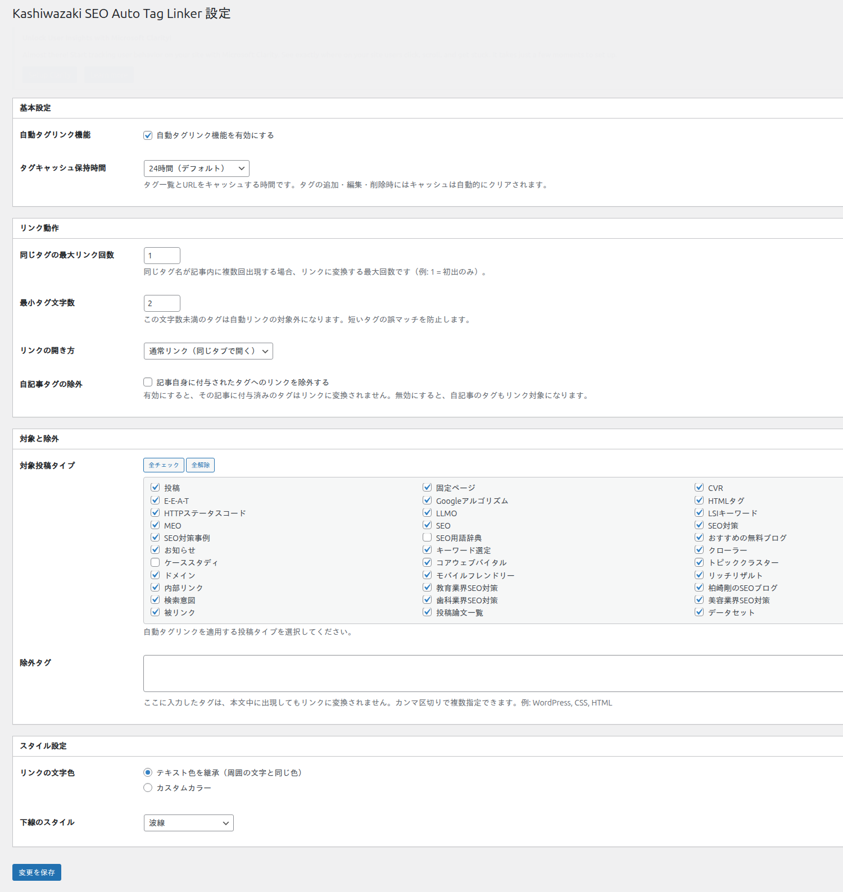
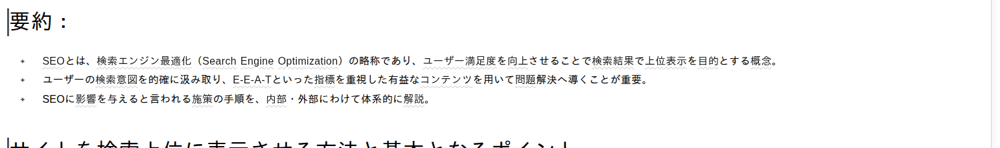

詳細設定
タグ除外設定、セルフリンク防止、キャッシュ機能など、Kashiwazaki SEO Auto Tag Linker の詳細な設定項目を解説します。
タグ除外設定
特定のタグを自動リンク変換の対象から除外できます。一般的すぎるタグや、リンク化が不適切なタグを除外リストに登録してください。

フロントエンド表示例

除外タグの登録
設定画面の「除外タグ」セクションに移動します。
除外したいタグ名を入力フィールドに入力します。複数のタグはカンマ区切りで入力できます。
「設定を保存」をクリックして変更を反映します。
除外タグには、サイト名やブランド名など、タグアーカイブへのリンクが不要なタグを登録することを推奨します。
セルフリンク防止
セルフリンク防止機能を有効にすると、投稿が属するタグのアーカイブページへのリンクが自動的に無効化されます。例えば、タグ「WordPress」が付いた投稿内で「WordPress」というテキストがリンク化されるのを防ぎます。
| 設定 | 説明 |
|---|---|
| 有効 | 投稿自身が属するタグへのリンクを生成しません。ユーザーが閲覧中のタグアーカイブページへの冗長なリンクを防ぎます。 |
| 無効 | すべてのタグを等しくリンク対象とします。セルフリンクも生成されます。 |
セルフリンク防止はSEOの観点からも推奨されます。自分自身へのリンクはリンクエクイティの分配に寄与せず、ユーザー体験を損なう可能性があります。
リンク変換の動作詳細
プラグインは投稿コンテンツのフィルタリング時に以下の手順でタグリンクを生成します。
投稿に関連するすべてのタグを取得し、除外リストと最小文字数フィルタを適用します。
投稿コンテンツ内でタグ名をテキスト検索し、HTMLタグ内（属性値やタグ名）の一致を除外します。
一致したテキストをタグアーカイブURLへのリンクに変換します。最大リンク数に達した時点で変換を停止します。
設定されたリンクスタイル（色・下線）をインラインCSS経由で適用します。
キャッシュ機能
タグデータのキャッシュにより、大量のタグが登録されたサイトでもリンク変換のパフォーマンスを維持します。
| 項目 | 詳細 |
|---|---|
| キャッシュ対象 | タグ一覧とタグアーカイブURLのマッピングデータ |
| キャッシュ更新 | タグの追加・編集・削除時に自動的に更新されます。 |
| パフォーマンス効果 | ページ表示ごとのデータベースクエリを削減し、レスポンス時間を短縮します。 |
HTML要素の保護
プラグインはコンテンツ内のHTMLタグを適切に処理し、以下の要素内のテキストはリンク変換の対象外とします。
- 既存のリンク（
<a>タグ内のテキスト） - 見出し（
<h1>〜<h6>タグ内のテキスト） - コードブロック（
<code>、<pre>タグ内のテキスト） - 画像のalt属性やtitle属性
カスタムHTMLブロックやショートコード出力内のテキストもリンク変換の対象となります。特定のコンテンツ領域でリンク変換を無効にしたい場合は、除外タグ設定をご利用ください。